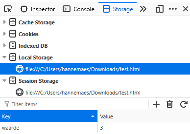
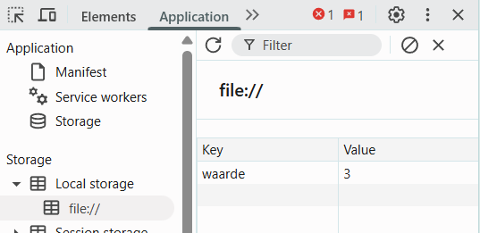

Wat is LocalStorage
Een website kan gegevens opslaan in de browser van de gebruiker met localStorage.
De data blijft bewaard over browser-sessies heen: sluit je de tab of browser, dan staat de data er nog steeds bij de volgende bezoek.
Werken met LocalStorage
- Je slaagt data op met key-value pairs.
- LocalStorage is per origin (per URL):
example.com/page1enexample.com/page2hebben dezelfde opslag.http://example.comenhttps://example.comhebben een aparte opslag .
- Als de gebruiker cookies blokkeert, kan het zijn dat de browser ook blokkering toepast op het opslaan van data via localStorage.
// Iets opslaan
localStorage.setItem("waarde", 3);
// Iets uitlezen
const naam = localStorage.getItem("waarde"); // 3
// Eén item verwijderen
localStorage.removeItem("waarde");
// Alles verwijderen
localStorage.clear();
LocalStorage in Developer Tools
Je kan via de F12 Developer Tools bekijken wat er in je localStorage zit:
Firefox
F12 Storage > Local Storage > Website Name

Chrome & Chromium Browsers
F12 Application > Local Storage > Website Name

Oefening: Dark & Light mode
Maak een eenvoudige dark mode-toggle:
- Voeg een knop dark mode en light mode knop toe op je pagina.
- Wanneer de gebruiker klikt, verander je de CSS en verberg en toon je de juiste knop.
- Bij het laden van de pagina lees je localStorage uit en stel je meteen de juiste modus in.
tip
Je kan gebruik maken van emoji’s of ASCII symbolen om snel en makkelijk afbeeldingen in je knop te zetten.
Cookies
Cookies gebruiken niet automatisch localStorage, het zijn twee verschillende opslagmechanismes met een ander doel.
Ze lijken wel op elkaar omdat ze allebei data in de browser van de gebruiker bewaren.
Wat zijn cookies?
Een cookie is een klein stukje data dat een server naar de browser stuurt en dat bij elke HTTP-request terug naar de server meegestuurd wordt.
Cookies worden vooral gebruikt voor inloggen/sessies, voorkeuren (taal, regio) en tracking/analytics.
Wat is localStorage?
LocalStorage is een key–value opslag in de browser, bedoeld om data client-side te bewaren (bv. thema, winkelmandje, instellingen). De data wordt niet automatisch meegestuurd naar de server bij elke request, ze blijft in de browser tot je ze wist.
| Cookies | localStorage | |
|---|---|---|
| Doel | Servercommunicatie (sessies, tracking) developer.mozilla | Client-side opslag (UI-state, cache) developer.mozilla |
| Meegestuurd met HTTP | Ja, bij elke request naar de server. developer.mozilla | Nee, blijft in de browser. developer.mozilla |
| Opslaglimiet | Ongeveer 4 KB per cookie. supertokensyoutube | Ongeveer 5–10 MB per domein. w3schools |
| Vervaldatum | Expiratiedatum verplicht of sessiecookie. developer.mozilla | Geen automatische expiry; blijft tot wissen. developer.mozilla |
| Toegang | Server én JavaScript (tenzij HttpOnly). developer.mozilla | Alleen via JavaScript in de browser. developer.mozilla |
Created: 18/11/2025